唱红歌怀念毛主席。2013年，长沙
老杨随笔系列（3）
和大学生朋友们谈谈我对毛主席的个人看法
by 长沙杨飞
刚到湖南大学的新同学会发现这是一个充满了主席元素的地方：东方红广场巨大的毛主席塑像，爱晚亭里的毛主席手迹，橘子洲头耸立着十层楼高的毛主席头像，不少出租车上还挂着毛主席平安符，更不消说大一新生都要学的马列主义毛泽东思想等等。
但同学们上网会发现，对毛主席的评论是两个极端，毛黑和毛粉几乎要掐起架来。貌似中国政府官方的评价还算中间：功过三七开。毛主席的功劳我们都知道，但三分过的具体情况，课本少有陈述。这里我愿意和同学们交流一下本人对毛主席的看法。
人要吃饭才能生存，衣食住行是第一要素。这是一个唯物主义者的常识。我认为评价一个领导人最重要的标准是看他执政（在世）时期是否改善了人民生活。我特别强调“在世”二字。
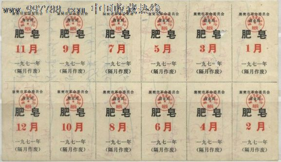
湖北襄樊市1971年肥皂票
按这个标准，毛主席不及格。如果不算1959到1961这三年困难时期，毛泽东去世的1976年，大概是中国人民生活水平最差的时候。按官方的说法，那时国民经济已经到了崩溃的边缘。
1949到1976年毛主席治理了中国27年，把老百姓的生活搞得这么贫困，如果说他是一个优秀领导，这不合我的逻辑。每当有人怀念毛主席，我总想去问一句：你想回到一切排队凭票的日子吗？
1976年我才6岁，不怎么懂事，但我记得那时各种物资极其缺乏，大米、食用油、猪肉、布匹、肥皂，甚至连豆腐都是凭票供应，在供应的日子里还要早起去排队，不然啥也买不到。住房条件也很差，我和姐姐妈妈三人挤在一间只有十几平方的小屋。等毛主席去世了，我们家的生活才慢慢开始改善。
假如有个领导人说：“在我任内，国家会有两弹一星，国际地位大大提高，但是，你们的生活将会比较糟糕，会饿死一些人。等我死后，你们的生活水平会慢慢变好。”这样的领导人，你会支持他吗？需要指出的是，1976年之后中国人民生活的改善，并不是毛主席的功劳，而是因为邓小平彻底纠正了毛主席的错误做法，才让中国走上了发展经济的道路。
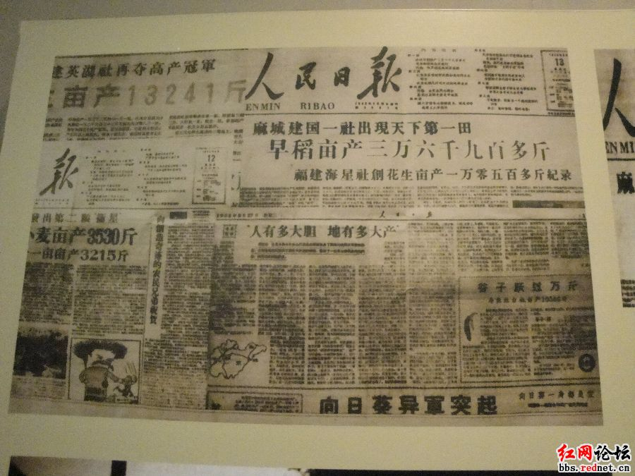
人民日报关于大跃进亩产的报导
也许你会问：为啥毛主席领导下大家的生活这么差？这得从1949年毛主席建立新中国之后的治国方针说起。小的就不说了，我们来看看一些较大的事件：
1950 - 1953，抗美援朝
1957 - 1958，反右运动
1958 - 1959，人民公社与大跃进运动
1959 - 1961，三年困难时期
1966 - 1976，文化大革命
抗美援朝这事说来话长，我改天单独写，这里不多讲。鄙人愚见，从1957年到1976年，毛主席一直以政治运动为最要紧，至于老百姓是否能吃饱饭，他不是特别在意。政治权力斗争，毛主席大获全胜，在世的时候没人敢说他一个不字。但是，老百姓的日子惨了。
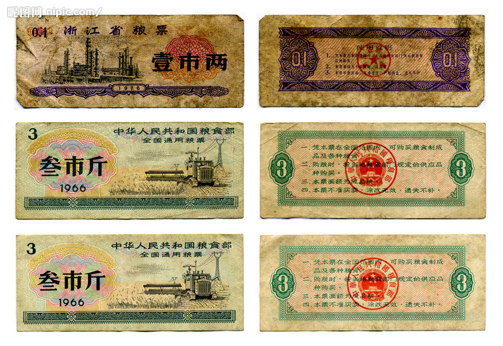
各种粮票
1959年到1961年的三年困难时期到底饿死多少人，官方一直没有说法。民间分为两派，一派说饿死了三千万，一派说撑死顶多六百万。就算只有六百万，直接导致这场民族悲剧的责任人，应该追究领导责任吧？那实在惨绝人寰，很多村子整家饿死，树皮都吃光了，最后人吃人。请搜索关键词“信阳事件”。当年的中南局第二书记王任重说：“我到光山（信阳地区的一个县）去看过，房屋倒塌，家徒四壁，一贫如洗，人人戴孝，户户哭声，确实是这样，这不是什么右倾机会主义攻击我们，这是真的。”
为啥饿死这么多人？我基本同意刘少奇主席的说法，那是三分天灾七分人祸。那三年的气候基本正常，死人无数的直接起因是毛主席1958年发动的大跃进运动，让大家跑步进入共产主义。
亩产万斤，公社大食堂免费吃饭，这太棒了。然后大家跑进去，不到一年就发现是一个骗局。但毛主席不但没有被追究责任，反而打击报复指出自己错误的人，在七千人大会上指出大跃进错误的刘少奇同志，以及上“万言书”的彭德怀同志，都死得好惨，可以说连收尸的都没有。如果说毛主席是一个让人尊敬的领导人，这是否符合逻辑？
连国家主席和开国元帅都死得这么惨，如果有普通老百姓胆敢对毛主席本人或其思想主张提出任何意见，是什么下场？请搜索“星火”、“遇罗克”、“张志新”、“林昭”、“王申酋”、“钟海源”、“李九莲”这些关键字，看看死无全尸是什么意思。顺我者昌逆我者亡，这就是毛主席对持不同政见者的做法。
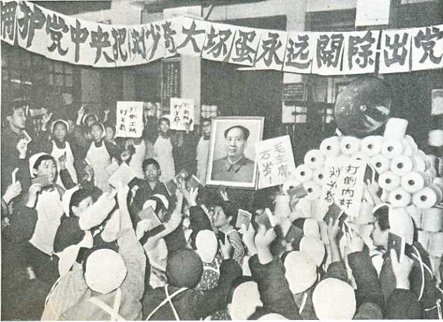
打倒叛徒、工贼和内奸刘少奇
我还是简单说说李九莲吧，相比张志新等人，她名气不大。1966年文化大革命爆发时，李九莲是赣州第三中学学生。1967年6－7月，江西赣州发生大规模武斗，造成168人死亡。李九莲在收尸时受到刺激，开始对“文革”提出疑问（写日记）。比如1969年2月李九莲在日记第42页中写道：“干部下放劳动，这期间的血泪何其多！青年学生到农村去，这期间的痛苦与绝望又是何其多！”（这指的是毛主席号召的上山下乡运动）
1969年5月1日，李九莲被部队的男友曾昭银告发而被捕，以“反革命罪”被拘留审查。1977年12月14日李九莲被公开枪决。为防止她枪决时喊口号，李九莲的下颚和舌头被尖锐的竹签穿在一起，枪决后她被抛尸荒野，并被歹毒之徒奸尸、割去双乳。
无产阶级文化大革命具体死了多少人，数字很难统计。我举两个例子，湖南“道县事件”和"广西武斗"。道县从1967年8月13日到10月17日，各级武装部门和民兵共杀死4193人，326人被迫自杀，年纪最大的78岁，最小的10天。连婴儿都不放过，几十户人家绝户（黑五类坏分子家庭）。杀人方法有枪杀、棒打、绳勒、沉水、火烧、活埋等等。前中共中央总书记胡耀邦同志1981年对处理道县遗留问题指示说:“1967年7、8、9三个月，全国不少省发生了这样的事情。这是康生、谢富治他们搞起来的。现在已经13年了，这样的事情不要声张了，处理完了就算了，慢慢让它平息下去。”
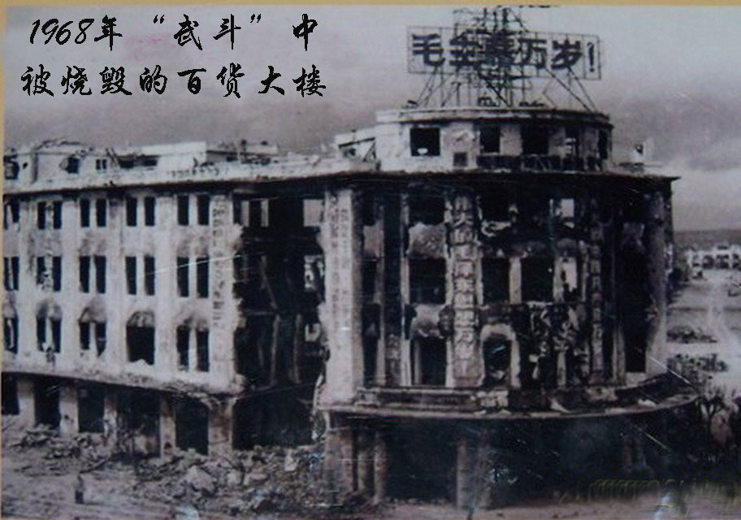
1968年武斗中被毁的南宁市百货大楼
1968年7 -
8月，广西南宁“四二二”和“联指”两派武斗，榴弹炮和火箭弹都用上了，广西军区解放军直接参与武斗，支援“联指”。据不完全统计，“四二二”派被打死1340人，被俘6445人，另有2500多名居民被抓捕，市中心33条街巷被炮火击中，一片废墟，烧毁房屋2820间，50000多居民无家可归。
1968年8月初，面对解放军和“联指”的围剿，“四二二”派近三千人（一说七千人）躲进地下人防工程。8月8日，“联指”指挥部命令水库向南宁邕江放水。河水倒灌，不少“四二二”人员只好爬出来投降，当场被杀。其余坚守在地下工事中的数千“四二二”反对派和他们的家属，全被溺死，无数尸体顺流而下，香港报纸惊呼：广西武斗，尸漂大海…，震动世界。
文革研究专家宋永毅曾说，文革大规模屠杀事件是“国家机器行为与暴民政治的有机结合”。我深以为然。现在大家一说到文化大革命，都把责任推给别人，上了四人帮的当，上了康生、林彪的当，上了毛主席的当等等，唯独不说自己没脑袋。我以为，只要当时没有站出来制止文革的，人人都有责任。文革的最大教训是：要坚持独立思考，拒绝洗脑，不要以为政府和领导人什么都是对的。
对人权（生命）的尊重是任何时候都要坚持的基本原则，决不可越雷池半步。这是普世第一原则。
杀了这么多人，时至今日，没有看到任何当年的广西“联指”成员出来认罪道歉。中国人的表现，别说比德国人，比日本人都差远了。广西惨案的直接指挥者，时任广西自治区书记兼广西军区第一政委的韦国清（上将），后升任解放军总政治部主任和全国政协副主席。
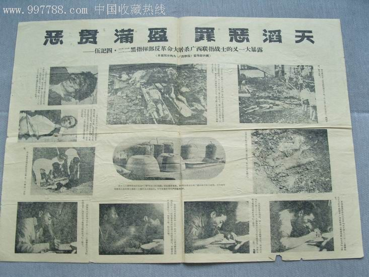
广西“联指”展示“四二二”杀人证据
有人说这种武斗，双方都不是什么好鸟。比如“联指”和解放军杀了“四二二”几千人，但“四二二”不也杀了“联指”的人吗？确实如此，一般来说，任何朝中国人自己开枪的行为都是犯罪。但是不要忘记，武斗双方都是打着捍卫毛主席的旗号。是谁造成了武斗的局面，这个问题如果追根溯源，毫无疑问会落到毛主席本人头上。
对毛主席的文革责任问题，1981年中共中央关于《关于建国以来党的若干历史问题的决议》原文如下：“对于文化大革命这一全局性的、长时间的左倾严重错误，毛泽东同志负有主要责任。但是，毛泽东同志的错误终究是一个伟大的无产阶级革命家所犯的错误。”
毛主席负有主要责任，这肯定没错。但说毛主席只是犯了错误，我很难同意。不说组织杀人罪，反人类罪，往最轻里说，渎职罪是肯定没跑的。煤井下死了几个人都得追究渎职罪，全国死了上千万人，却只是个错误，看到这个决议我眼珠子都快掉出来了。这不是犯错，这是犯罪。
人只要犯了罪，就得依法严惩，不论他以前有多大功劳。这是一个基本原则。但是，这个原则是否也适用于最高领导人，比如毛主席？这个回答应该是
yes. 这一点我们要向台湾学习，向狱中的陈水扁同志学习。
但是，死人是无法站上审判台的。一个人犯了罪，后来死了，要怎么办？在首都建个大庙供起来，就像东京的靖国神社那样，没事就去参拜参拜？
四清、武斗、破四旧以及文化大革命的各种极端行为，捣毁文物无数，民族传统文化和礼仪荡然无存。凡是破坏中华文化的人，都可称之为汉奸。为首倡议者，其罪当诛。
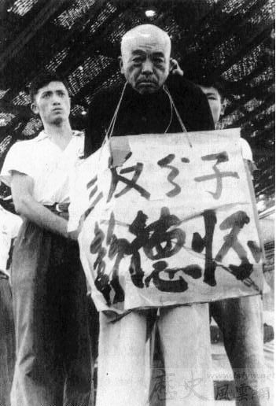
上图：批斗三反分子彭德怀，
文革十年，我最痛心的是大批著名文化界人士的死亡，比如翻译家傅雷（和太太一起上吊自杀）；女钢琴家顾圣婴（开煤气全家自杀）；著名黄梅戏演员严凤英（服安眠药死于医院，死后还被剖腹）；作家老舍（投湖自杀）；前光明日报总编储安平（被批斗失踪）；上海音乐学院钢琴系主任李翠贞（开煤气自杀）。。。红卫兵小将直接把开水倒入教授的耳朵（据谭抒真回忆录），光上海音乐学院就有13位老师自杀，。。。这个名单实在太长了。。。
很多人说毛主席以前有功，后面的错误（罪行）应该可以原谅。我不能同意这个观点。若有功就可以胡作非为，那就天下大乱了。毛主席本人在建国初期亲自批准枪毙了刘青山和张子善两个贪官，说明以前有功的人只要犯罪，一样得枪毙
，这是连毛主席本人都同意的基本原则。
但是，这个原则是否也适用于最高领导，比如毛主席本人？
我们又遇到这个问题了。换句话说，是不是说官足够大就可以不追究犯罪责任？如果是法治社会，总统犯罪也一样要坐牢。如果是皇上为大，那就不好说了。
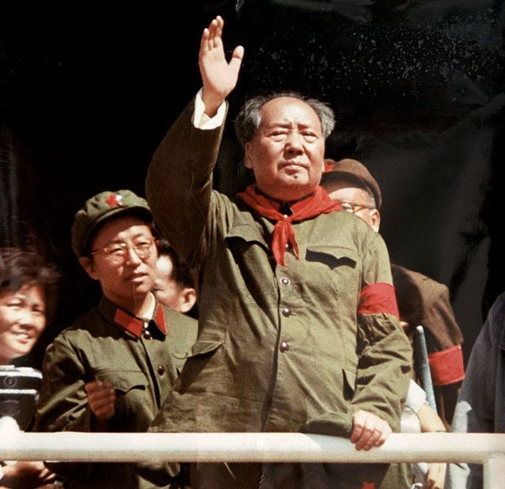
当然，毛主席也有功劳，最大的一件是统一了中国，结束了军阀混战，建立了新中国。这当然没错，但建立了新中国，
没过几年人民就开始受苦。毛主席一天不去世，折腾就一天不停止。这样的新中国，这样的领袖，你要吗？建立新中国的目的到底是什么？三年内战死了上千万人，就是为了建立一个饥饿和互相批斗的国家？
鄙人愚见，要是三年内战蒋介石胜出，老蒋也一样会统一中国。至于台湾人民是否生活在水深火热之中，大家可以自由行去看看。当然，指挥两弹一星（原子弹、氢弹和人造卫星）确实是毛主席的功劳。我们刚刚批评了北朝鲜的金胖子，简直不是人，不顾人民没饭吃，强行搞核武器和人造卫星。1960年的毛主席也面临差不多的情况，全国饥荒，死人无数，但饿死也要搞原子弹。
唱红歌怀念毛主席。2013年，长沙
我发现在纪念毛主席的人群里，当年的红卫兵占不小比例。这是2013年的某天，一群老人在长沙杜甫江阁唱红歌怀念毛主席。这些人在文革中应该就是那些疯狂的工宣队和红卫兵（当时的高中生和大学生），1966年和1967年按照毛主席的指示，砸烂一切，斗死了很多人，然后又被一脚踢开（1968年毛主席强令他们上山下乡，去农村干活十年）。这一代人最美好的青春都耗在淤泥和猪圈中。他们现在怀念毛主席实在是匪夷所思。被人卖了还帮人数钱？
不少老人怀念毛主席，原因之一是那时基本没有贪污腐败。这是不对的。毛主席时代贪腐案多了去了，枪毙的都不少了。有的案子别看数额小，如果考虑这些年上百倍的通货膨胀，那时的小贪也是惊人的。具体可以去查查“三反五反运动”成果。文革时期贪污和奸污案在上山下乡知青中并非罕见。
其实，搞钱搞物都是低级贪，真正的大贪不是这个搞法。有些同志一说起皇帝就猜他家一定用的是金扁担。还是别闹这种笑话吧。打个比方，新加波廉洁全球数得着，那只是因为他们进入了贪腐的高级模式：新加坡就是李家坡，李光耀还用得着收那点小钱？普天之下莫非王土。从这个角度来说，独裁是最大的贪腐。毛主席是不是独裁，诸位自己判断。
当然，也不是说皇帝完全不用金扁担。以特供为例，普通干部贪几十万买几套房子就是贪官，要抓起来。为了给领导人做瓷器、烟草，停下生产，调配全国之力，这算什么呢？（2013年6月，几个毛主席专用瓷碗在香港拍出了八百万元的天价）
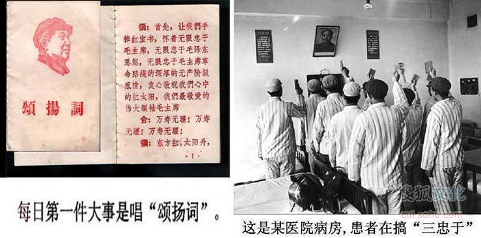
最后说说主席的个人生活。男人都热爱女青年，本没啥好说的，现在很多人都是外头彩旗飘飘，家里红旗不倒。不过，有了新情人就扔掉自己的原配妻子和孩子，这种人确实不多见。1927年毛主席上井冈山打游击，
毛主席的太太杨开慧带儿子回了乡下老家（长沙板仓）。那时湖南省政府主席何健还挺客气的，没去找杨开慧的麻烦（那时算是土匪家属）。
据《彭德怀自述》，毛泽东命令彭德怀先后两次攻打长沙。第一次是1930年7月25日，红军以少胜多攻克长沙，占城10日。1930年8月23日红军第二次攻打长沙，战役未果。湖南省政府主席何鍵大怒，杨开慧在1930年10月被逮捕杀害。
毛主席命令彭德怀两次攻打长沙的时候，杨开慧在哪里？还在距长沙60公里的板仓。此地就在彭德怀进攻长沙的路上。红军在长沙城外待了整整三个星期而没有将杨开慧接走,
也没有派人通知她离开。要接走杨开慧，这不过是两三个勤务兵就能干的事，然而毛泽东没有做。我们都知道，1930年正是毛泽东与贺子珍在井冈山爱情火热之时。
此乃个人不成熟的见解，请大家扔砖。
杨飞，
2013/8/30，长沙
其他参考图片： 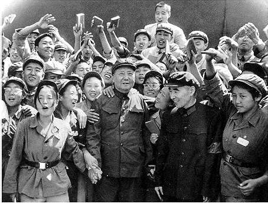 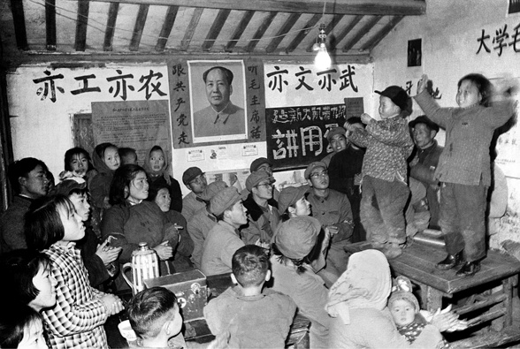 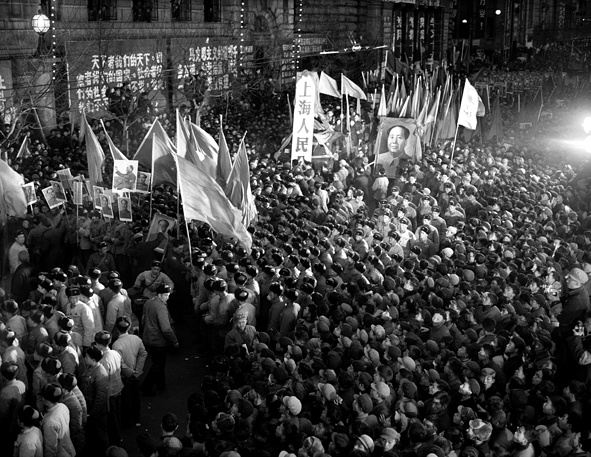 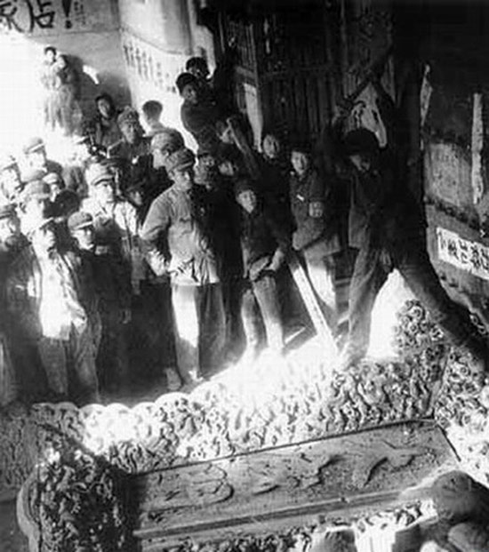
毛主席和林彪副主席接见红卫兵
小孩子革命表演
上海公社成立之夜
红卫兵砸毁山东曲阜孔庙
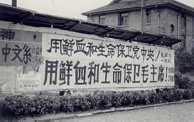
文革街头标语
关注老杨：
杨飞作品集
midphoto.com
微信公众号@老杨书吧
微信：laoyang2063
新浪微博@长沙杨飞
推特twitter@feiyang17
Facebook：yangfei999999@hotmail.com
本人坚持独立创作，不加入官方协会，作品免费阅读，不刊登广告，但创作人也需要生活，您若喜欢拙作，可给小儿打赏一份牛奶。我的微信和支付宝账号就是我的手机号13974850714。如果您有Paypal，点击这里亦可资助。 微信打赏请扫描或长按以下二维码：

感谢支持独立作家